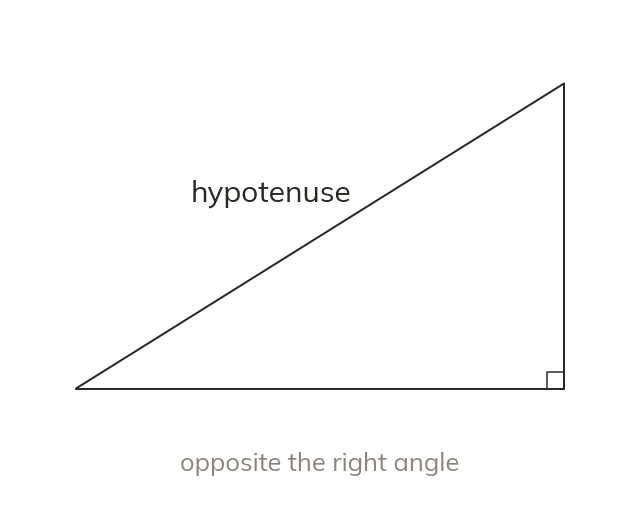

The side opposite the right angle
The hypotenuse is the side opposite the right angle. It is always the longest side. Find it from the right angle, not by eye.
The hypotenuse is the side opposite the right angle, and it is always the longest side. It is found from the right angle, not from how long the sides look.